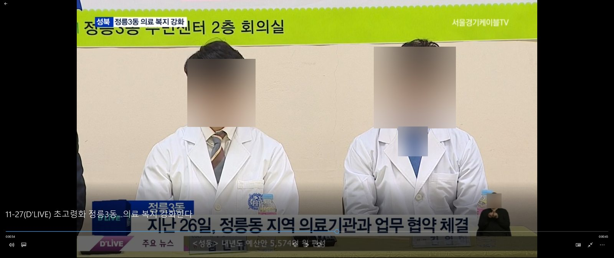
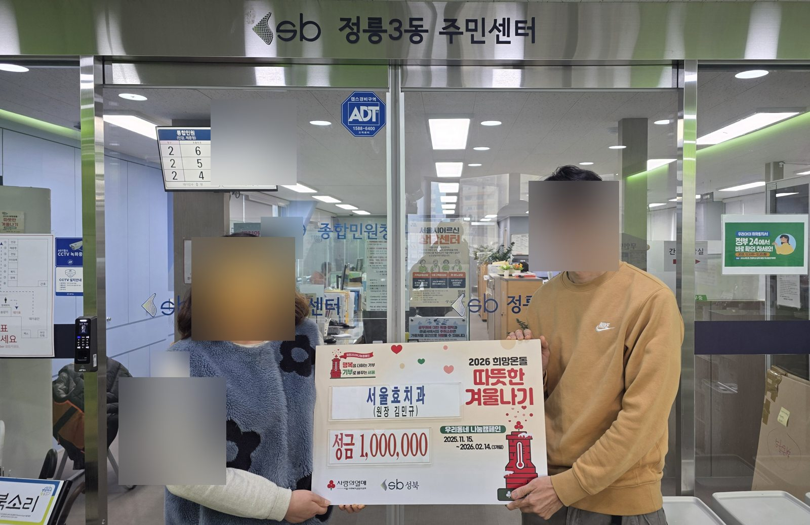
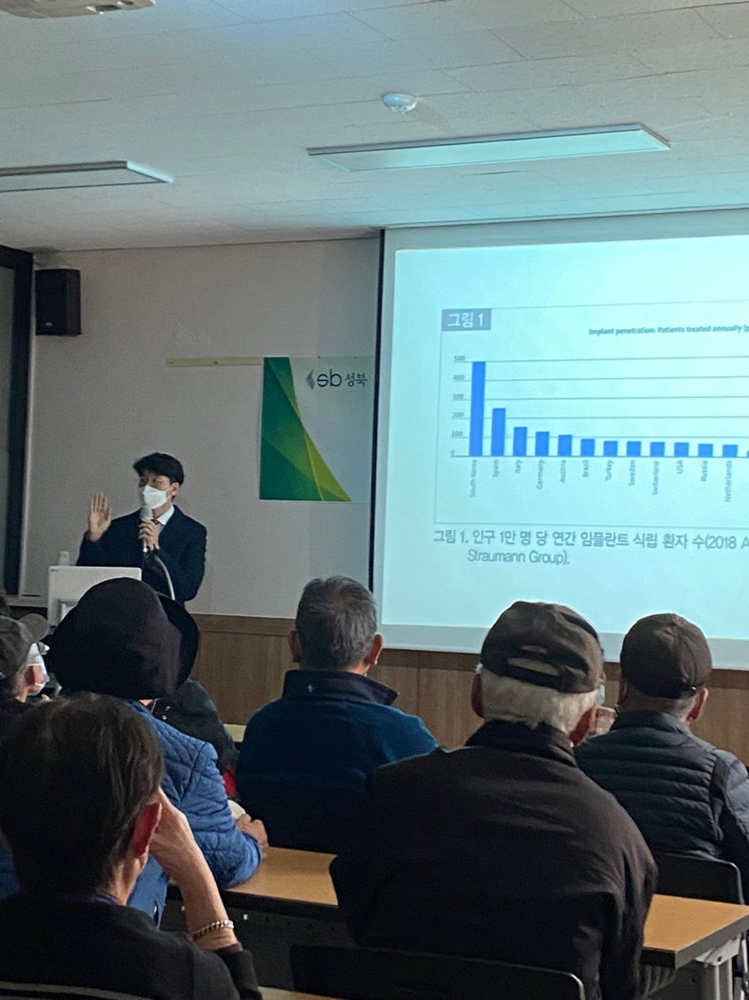
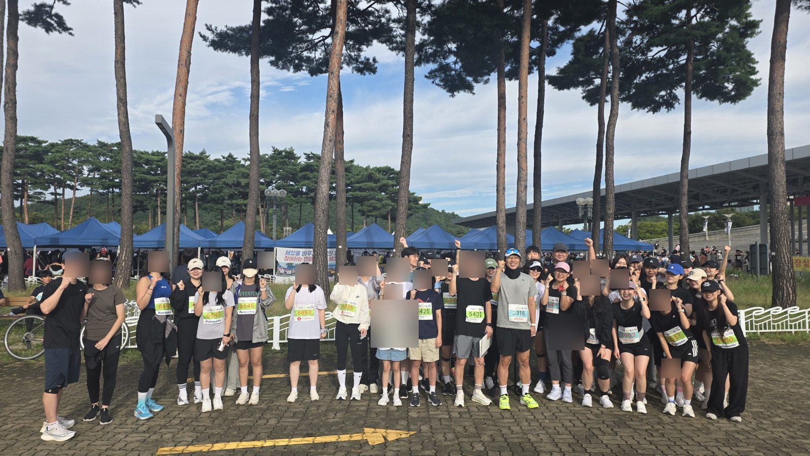
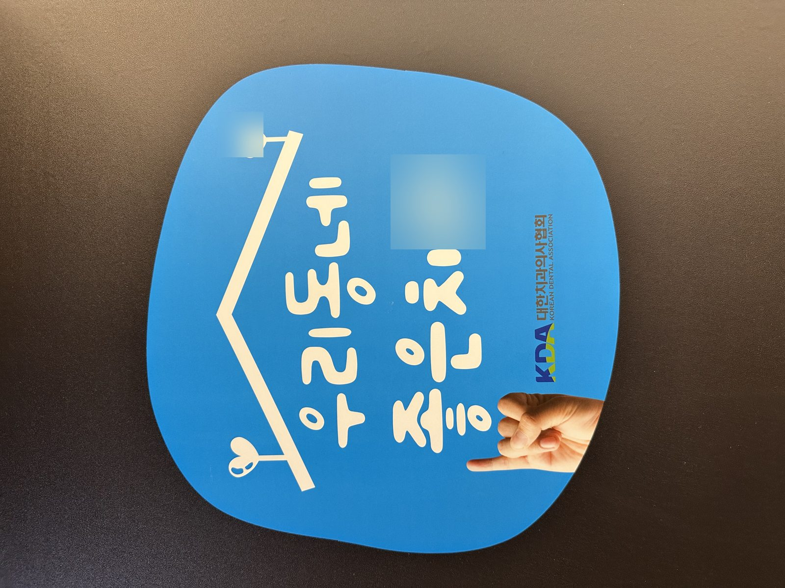
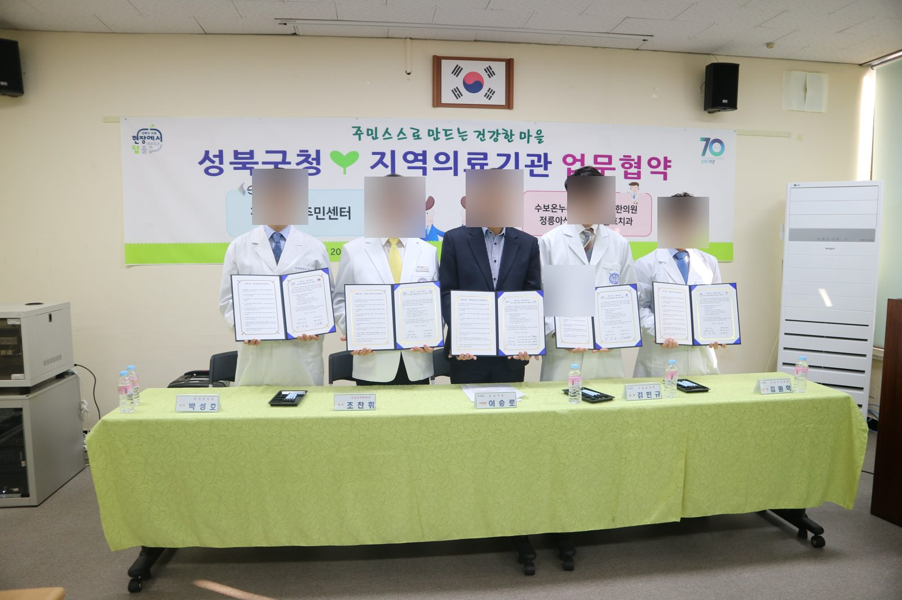
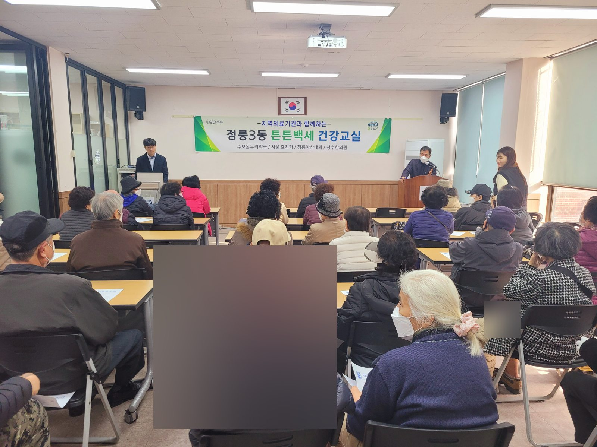
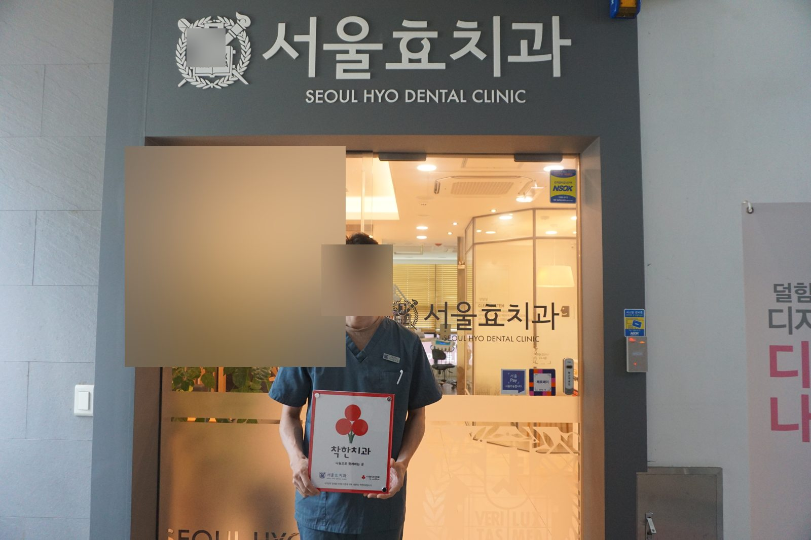

HOME / COMMUNITY
COMMUNITY
지역사회와 함께하는
치과의 역할.
구강보건교육, 봉사와 나눔 등 서울효치과의 지역사회 활동을 사진과 기록으로 소개합니다.
OUR ARCHIVE
지역과 함께한 발걸음
구강보건 교육과 지역사회 나눔의 현장을 기록합니다. 사진의 행사명·연도·참여 역할은 확인 후 보완할 수 있습니다.








※ 사진 속 인물의 얼굴은 개인정보 보호를 위해 자동 감지 가능한 범위에서 흐림 처리했습니다. 공개 전 전체 사진을 확인해 주세요.